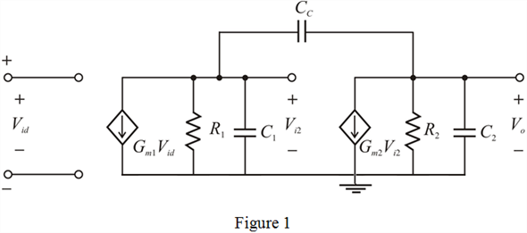
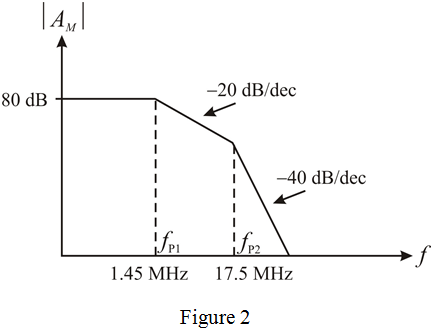
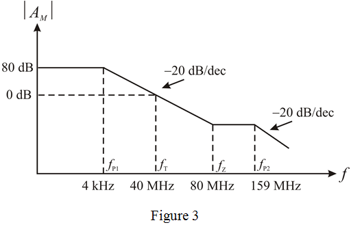

Step 1:
Refer to Figure 9.43 in the textbook for the CMOS amplifier circuit diagram.
The equivalent circuit of the CMOS amplifier circuit diagram is shown in Figure 1.

Step 2:
(a)
, , ,
,  , .
, .
To find the dc voltage gain, the capacitors are short circuited. In the equivalent circuit, consider the input side, it is observed that the capacitors  and
and  becomes open, the current through the resistor
becomes open, the current through the resistor  is . Therefore,
is . Therefore,
Now in the equivalent circuit, consider the output side, it is observed that the capacitors  and
and  becomes open, the current through the resistor
becomes open, the current through the resistor  is . Therefore,
is . Therefore,
Step 3:
Now derive the expression for the total dc voltage gain.
Substitute and .
Substitute
Therefore, the dc gain is,  .
.
Step 4:
(b)
The expression for  in the textbook (equation 9.176) is,
in the textbook (equation 9.176) is,
Here,  is the angular frequency of the dominant pole.
is the angular frequency of the dominant pole.
If the capacitance  is not connected, therefore, the dominant pole is,
is not connected, therefore, the dominant pole is,
Substitute 0.1 pF for  , 2 pF for ,
, 2 pF for ,  for
for  , and for
, and for  .
.
Therefore, the value of pole is, .
Step 5:
Consider the following expression.

Substitute the corresponding values.
Step 6:
Write the amplifier transfer function.
Also, the amplifier has two poles that are the roots of the denominator polynomial of equation. If the frequencies of the two poles are denoted by , then the denominator polynomial can be expressed as,
Now if one of the poles is dominant, say with frequency,  , then , and can be approximated by,
, then , and can be approximated by,
…… (1)
Step 7:
Now compare the coefficients of in equation (1) with the denominator of the amplifier transfer function.
Since,  is not connected, that implies,
is not connected, that implies,
Step 8:
Substitute for  , 0.1 pF for
, 0.1 pF for  , 2 pF for
, 2 pF for  ,
,  for
for  , and for
, and for  .
.
Therefore, the value of pole  is, .
is, .
Consider the following expression.

Substitute the corresponding values.
Step 9:
Consider the following to draw the bode plot.
From part (a), the dc gain is,
The gain in dB is,
From part (b), the poles are, and
Step 10:
The Bode plot for the gain magnitude is shown in Figure 2.

Step 11:
(c)
The frequency of the second, dominant pole can be found by equating the coefficients of terms in the denominator of amplifier transfer function and in equation (1).
Substitute for  from equation (1) if capacitance connected.
from equation (1) if capacitance connected.

Since, and if , then  can be approximated as,
can be approximated as,
Step 12:
Substitute  for
for  and 2 pF for
and 2 pF for 
Therefore, the value of the is, .
is, .
Consider the following expression.

Substitute the corresponding values.
Step 13:
Now find the value of  that will result in a unity gain frequency
that will result in a unity gain frequency  at least two octaves below
at least two octaves below  . Two octaves below
. Two octaves below  means . Therefore,
means . Therefore,
Or,
Step 14:
Consider the following expression.
Therefore,
Therefore, the maximum value of  is, .
is, .
Step 15:
Recall the expression for  in the textbook.
in the textbook.
Here,  is the angular frequency of the dominant pole.
is the angular frequency of the dominant pole.
Observe that, the first term in the denominator is much larger than the second term, implies that,
Since , that implies,

Here,
Step 16:
The expression for

becomes,
Substitute 4 pF for  , 2 mA/V for
, 2 mA/V for  , for
, for  , and
, and  for
for  .
.
Therefore, the value of the is, .
is, .
Consider the following expression.

Substitute the corresponding values.
Step 17:
The frequency of a zero is,
Substitute 2 mA/V for and 4 pF for  .
.
Therefore, the value of the is, .
Consider the following expression.

Substitute the corresponding values.
Step 18:
Consider the following to draw the bode plot.
From part (a), the dc gain is,
The gain in dB is,
The different poles are, , , and
Step 19:
The Bode plot for the gain magnitude is shown in Figure 3.
